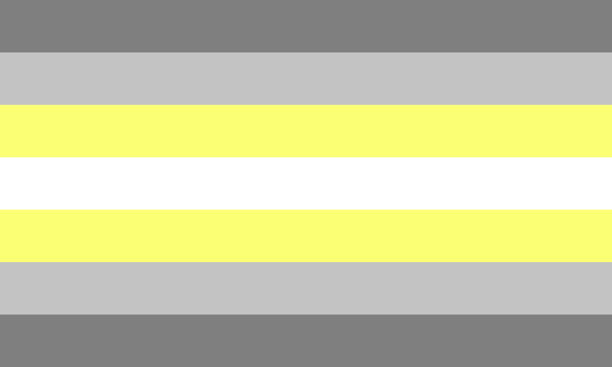

Deminonbinary
This flag is also often used to represent all demigenders. If you want to know more about demigenders, you can click here to see the Demigender page.
Definiton
Disclaimer: People can experience identities in different ways. As such, people can identify with a label without exactly matching the definition because identities are fluid.
Deminonbinary (also spelled deminon-binary and often shortened to demienby) is a term used by people who experience partial connection to being nonbinary. Some deminonbinary people also identify as another gender, which can be any gender or combination of genders, including a lack of gender or being agender. Deminonbinary only refers to a person's gender, so deminonbinary people can be any sexuality or romantic orientation. Deminonbinary people can use any pronouns they like or no pronouns, since pronouns don't equate gender. Deminonbinary people can present in any way they like; they do not have to present in an androgynous way to be deminonbinary.
Being deminonbinary does not necessarily mean that someone half identifies as nonbinary. Some deminonbinary people feel a strong connection with being nonbinary, while others only feel a vague association. A deminonbinary person may or may not identify as transgender for various reasons.
Flag History and Meaning
The deminonbinary pride flag was created sometime before 2013. The creator of the flag is disputed; some sources say that it was created by Tumblr user alexander--the-great, while others attribute it to Salem X (Tumblr user transrants).
Each color of the deminonbinary flag has its own proposed meaning(s):
- Grays: semi- or demigender
- Yellow: nonbinary gender
- White: combination with other gender(s), connection to agender
Related Identities
Deminonbinary can fall under these umbrella terms:
- Demigender
- Fluid
- Gender nonconforming (GNC)
- Genderqueer
- Nonbinary
- Queer
- Transgender
Additional Resources
- Unfortunately, there aren't very many good resources for deminonbinary people. However, since deminonbinary falls under the transgender umbrella, you can visit the Transgender page's Additional Resources section.
Sources and Image Attribution
Sources:
- LGBTQIA+ Wiki's "Deminonbinary" page
- Gender Fandom Wiki's "Deminonbinary" page
- LGBTQIA+ Fandom Wiki's "Demigender" page
Images:
- "Deminonbinary flag" by Nikki, licensed under CC0 1.0
{kind=link}